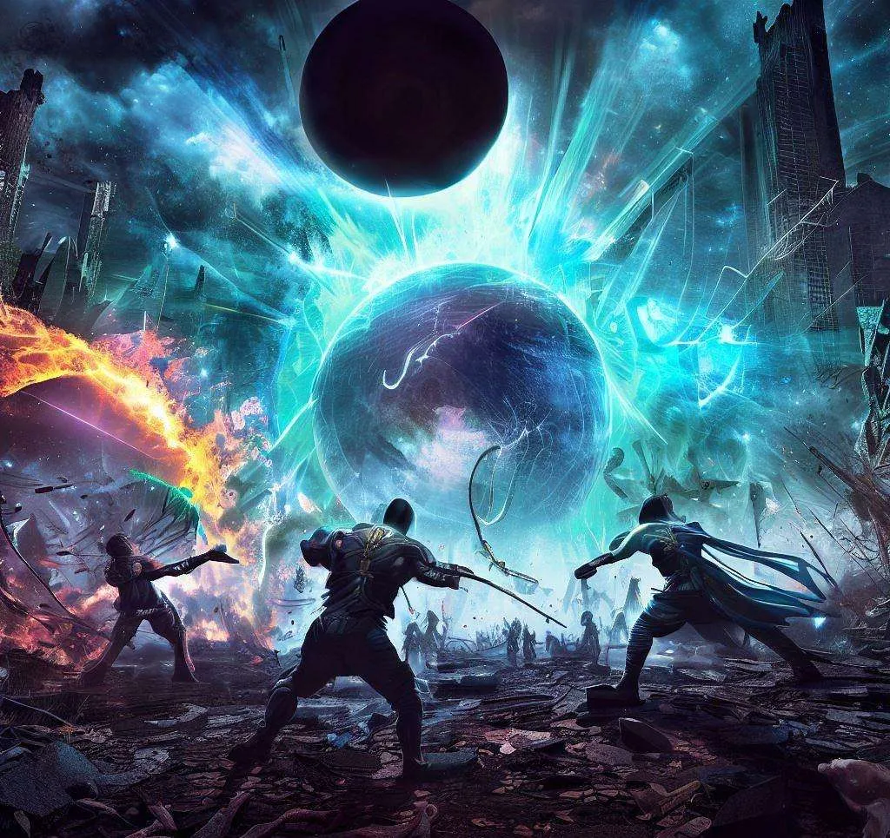
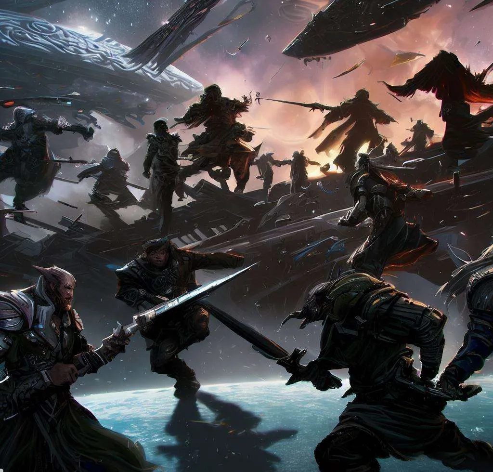
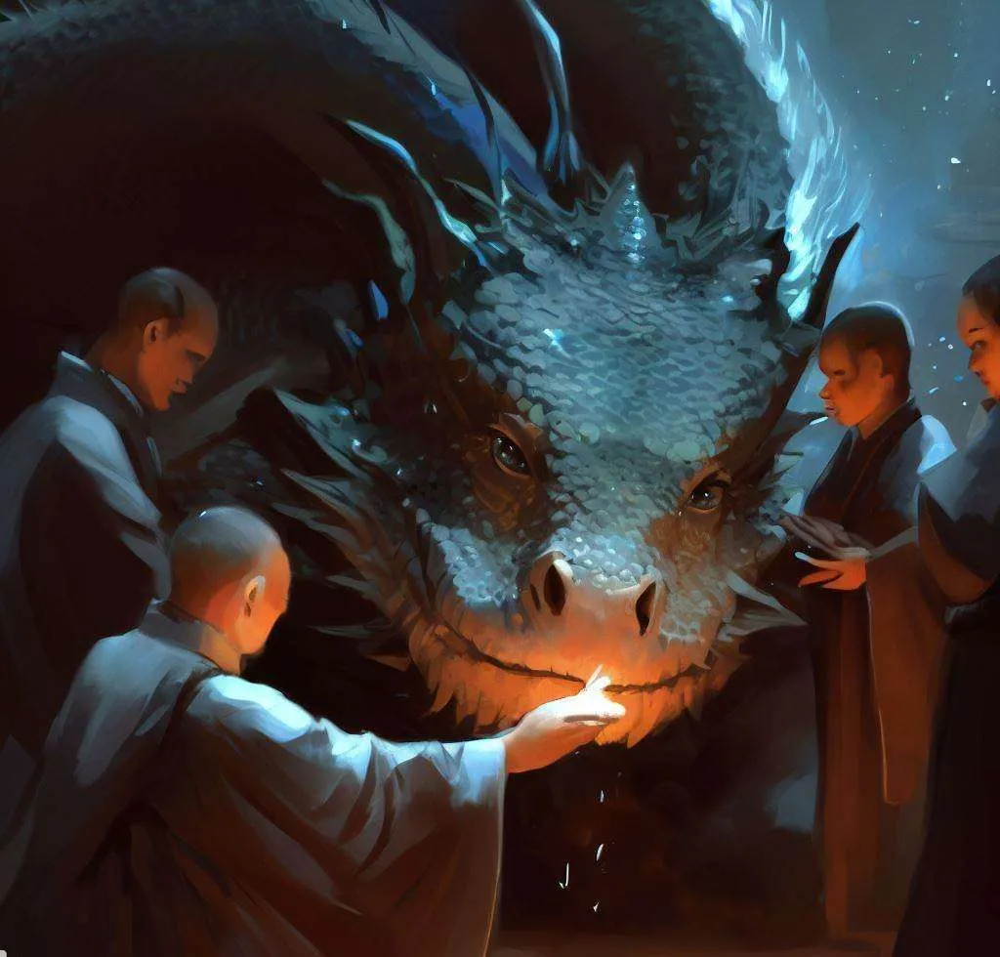
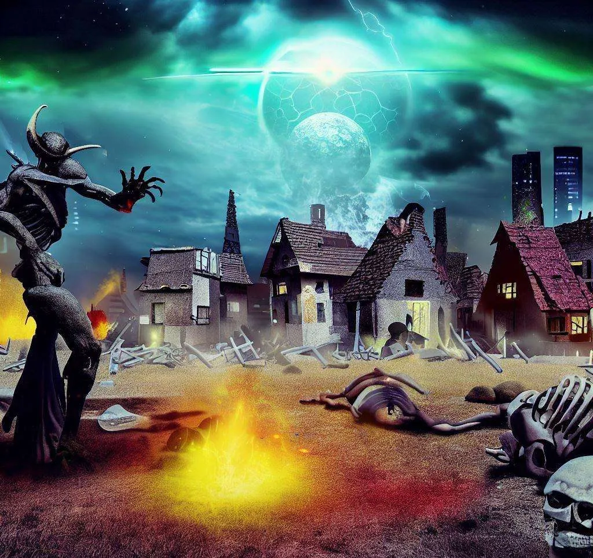
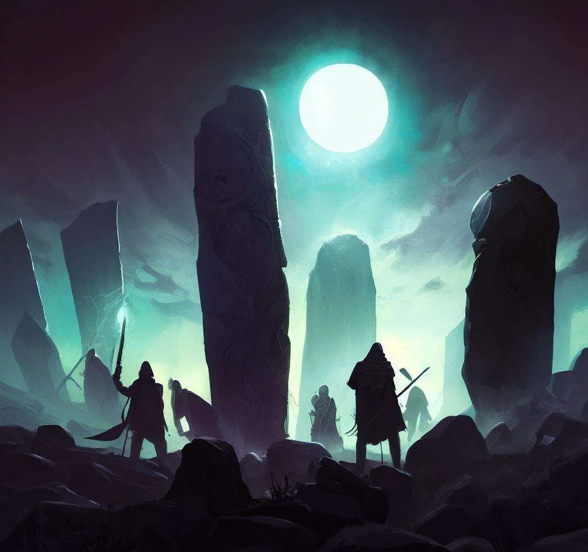
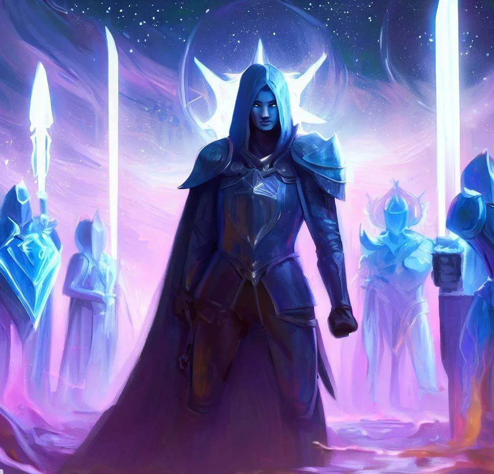
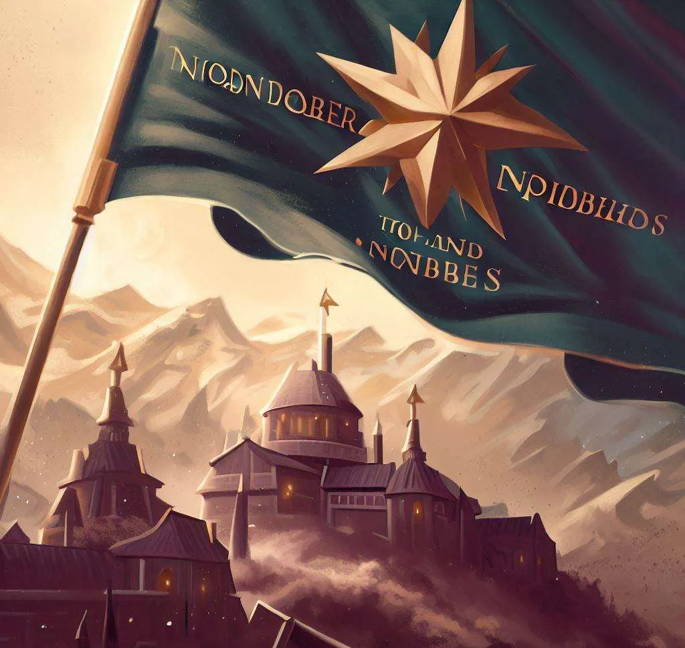
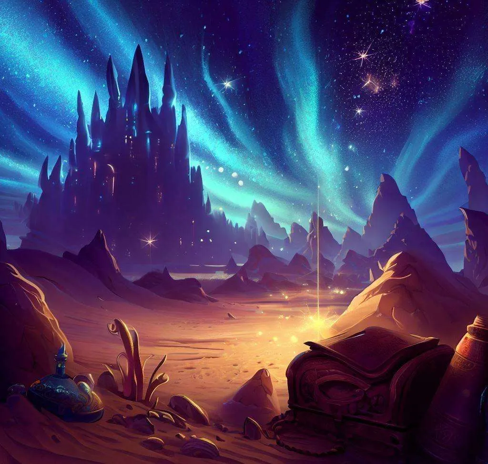
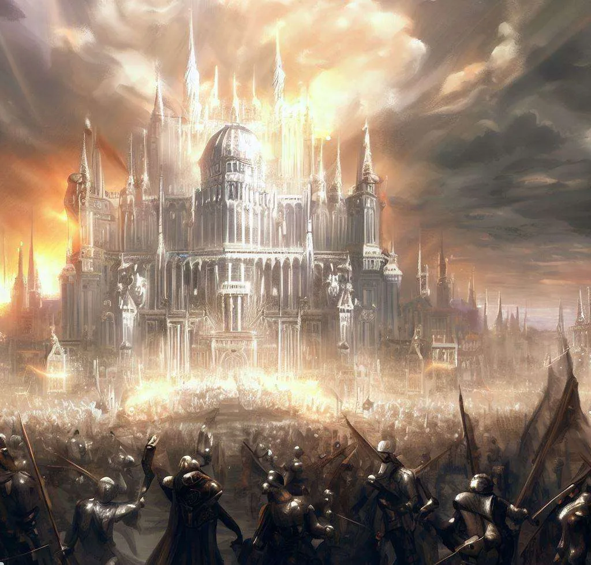
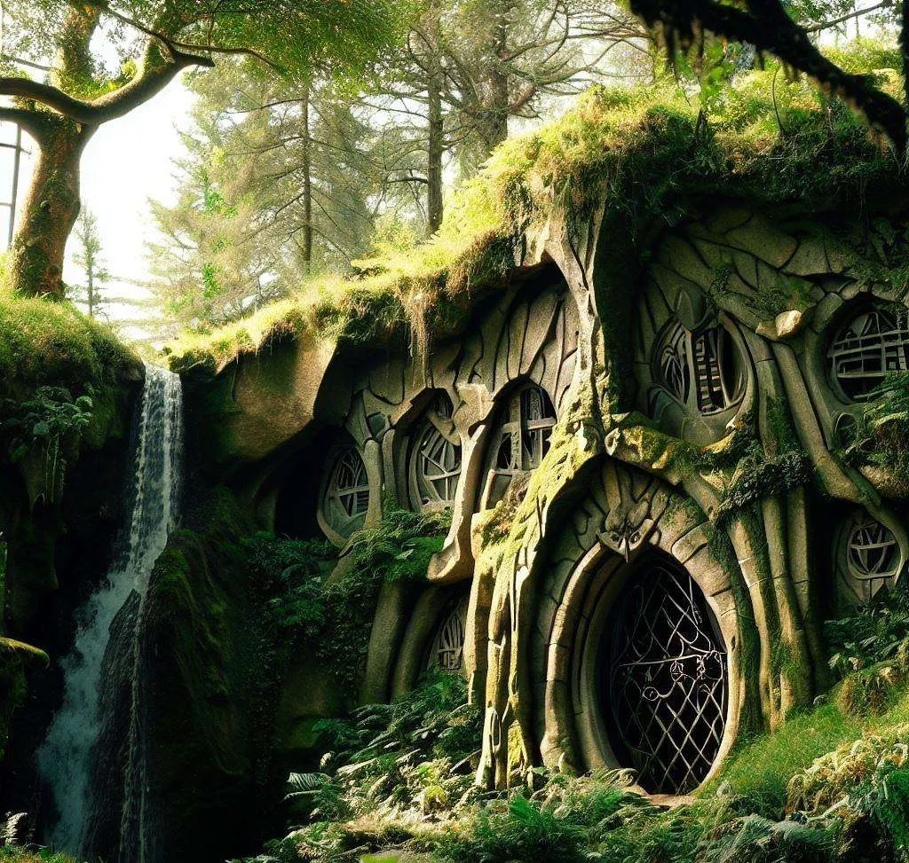

Extensão
RPG Educacional para Ensino de Biologia (nivel extensao)
- Ano
- Extensão
- Tipo
- Material
- Disciplina
- Biologia
- Nível
- Extensão
Em planejamento
ATUALIZAR (ENCONTRAR O CONTEUDO FEITO PRA OS ALUNOS, NAO ESSE QUE É DA ULTIMA CAMPANHA)
CAPA
CONTRA CAPA
Mapa Estelar
Reinos
Cidade
Taberna
Caverna
Lendas e Mitos
Há muito tempo, o universo era governado pelos dois deuses: Solus e Lunaris. Eles criaram os quatro planetas elementais:
Região Dune
Região do Nova Éden
Região do Vazio
Região de Glaciaris
Eles também criaram os povos marciais, que eram os seus filhos e seguidores. Cada planeta tinha uma pedra que continha a essência do seu elemento, e cada pedra era protegida por um guardião, que era o mais poderoso e sábio do seu povo.
A pedra de terra era a pedra da estabilidade, da prosperidade e da tradição. Ela era protegida por Dio, o líder dos Terranos. Dio era um homem forte, honrado e protetor. Ele amava o seu povo e o seu planeta, e cuidava da pedra de terra com devoção. Ele usava a pedra de terra para cultivar as plantas, os animais e os minerais do planeta, e para criar escudos, armaduras e fortalezas para defender o seu povo.
Mas Dio tinha um segredo. Ele invejava os outros povos marciais, que tinham mais liberdade, diversidade e magia do que os Terranos. Ele desejava ter mais poder, mais riqueza e mais glória do que os outros guardiões. Ele queria dominar o universo com as suas próprias mãos. Ele planejou roubar as outras pedras elementais, e usar o seu poder combinado para se tornar um deus.
Ele começou pelo planeta Aqua, o mundo da água. Ele sabia que os Aquarianos eram pacíficos, sábios e diplomáticos. Eles valorizavam a harmonia, a cooperação e a preservação da vida. Eles usavam a pedra de água para controlar o fluxo das marés e o clima do planeta, e para curar e proteger os seus aliados. A pedra de água era protegida por Lila, a líder dos Aquarianos. Lila era uma mulher gentil, inteligente e bondosa. Ela amava o seu povo e o seu planeta, e cuidava da pedra de água com carinho.
Dio se aproveitou da confiança de Lila, e fingiu ser seu amigo. Ele visitou Aqua várias vezes, e se mostrou interessado pela cultura, pela história e pela magia dos Aquarianos. Ele elogiou Lila pela sua beleza, pela sua sabedoria e pela sua liderança. Ele ganhou a sua amizade, a sua admiração e o seu amor.
Um dia, ele pediu para ver a pedra de água de perto. Ele disse que queria aprender mais sobre o elemento da vida, da pureza e da adaptação. Lila confiou nele, e o levou até o trono de água, onde a pedra estava guardada. Ela mostrou-lhe a pedra de água, que era uma joia azul-clara que brilhava com uma luz suave. Ela tinha o formato de uma gota e era cercada por ondas esculpidas em metal prateado.
Dio ficou maravilhado com a beleza da pedra de água. Ele sentiu o seu poder pulsando em suas mãos. Ele não resistiu à tentação, e agarrou a pedra com força. Ele usou a sua magia de terra para romper as ondas de metal que cercavam a pedra. Ele traiu Lila, e roubou a pedra de água.
Lila ficou chocada com a traição de Dio. Ela tentou impedir Dio de levar a pedra de água, mas ele era mais forte do que ela. Ele usou a sua magia de fogo para ferir Lila gravemente. Ele fugiu de Aqua com a pedra de água nas mãos.
A perda da pedra de água causou um grande desastre em Aqua. O planeta perdeu a sua biodiversidade, o seu clima e a sua magia. O mar se tornou agitado e violento. As tempestades se tornaram frequentes e devastadoras. As plantas e os animais se tornaram escassos e doentes. Os Aquarianos ficaram sem defesa contra o Eclipse, a força destrutiva criada por Solus, o deus da luz, da ordem e da tecnologia.
A perda da pedra de água também afetou os outros planetas elementais. O equilíbrio do universo foi quebrado. Os elementos entraram em conflito uns com os outros. O fogo se tornou mais quente e mais perigoso. A terra se tornou mais seca e mais árida. O ar se tornou mais frio e mais rarefeito. Os povos marciais ficaram em pânico e em desespero.
Dio voltou para Terra com a pedra de água nas mãos. Ele usou o poder da pedra de água para aumentar o seu próprio poder, e para dominar o seu planeta com as suas magias de água e de luz. Ele se declarou o rei de Terra, e ordenou que os Terranos o seguissem. Ele planejou atacar os outros planetas elementais, e roubar as outras pedras elementais: a pedra de fogo e a pedra de ar.
Mas Dio sabia que a sua traição poderia despertar a ira dos dois deuses: Solus e Lunaris. Os deuses viram e não ligaram, e apenas depois de eras e eras decidira enviar os seus semi-poderes em forma física (stands) para recuperar as pedras elementais, e para restaurar o equilíbrio do universo, mas isso é apenas uma profecias que ninguém acredita e nem se fala mais…

Em um universo onde a magia e a tecnologia se entrelaçam, um cataclismo cósmico conhecido como a "Sinfonia Estelar" desencadeia uma ameaça iminente chamada Eclipse. Nesse cenário de devastação pós-Guerra, dois deuses em conflito perpetuam o caos, enquanto povos marciais lutam por sobrevivência.

O mundo é palco de Legiões Mercenárias, Sagradas, Militares e Sombrias, com guerreiros de todas as origens combatendo em inúmeros conflitos. Ecos das batalhas passadas são visíveis nos povos marciais brutalizados e nas intrigas políticas.

O mundo é palco de Legiões Mercenárias, Sagradas, Militares e Sombrias (‣), com guerreiros de todas as origens combatendo em inúmeros conflitos. Ecos das batalhas passadas são visíveis nos povos marciais brutalizados e nas intrigas políticas.

Demônios Monstros (Inimigos) espreitam na sociedade, alimentando-se de almas, enquanto conspirações necromânticas ameaçam o reino.

A busca pelas Pedras da Alvorada, ligadas aos Tronos do Eclipse, unifica um grupo diversificado de heróis.

A Guarda dos Tronos, uma ordem de Guardiões da Luz Estelar, protege os Tronos Elementais, alinhando-se com outras raças contra o Eclipse, mas depois de uma vitória grandiosa eles são atraído e enfeitiçado pelas pedras e se corromper com seus poderes e beleza.

Casas nobres competem pela dominação dos Tronos e da Areia Estelar. A política é central, com alianças transitórias e desafios morais.

O reino, um deserto estrelado, esconde segredos como artefatos místicos dos insetos extintos. Magia poderosa é controlada pelas religiões oficiais, enquanto os Caçadores de Recompensa prosperam caçando demônios ou buscando tesouros perdidos.

O Império amoral da Lei da Prata floresce, enquanto povos lutam pela liberdade.

Os elfos supremacistas buscam subjugar as raças inferiores em prisões escondidas
Poucas sabem ao certo, porque a sombra tomou a galáxia, já outras acreditam que as pedras foram tiradas de seus devidos tronos por aqueles que protegiam; alojadas em alguns planetas (aqua, ignis, terra e air), assim tirando o ciclo correto e transformando os planetas em CAOS
Funcionamento
Em uma sala de 40 alunos, 4 mundos, grupos de 10 alunos pra cada area (determinar no dado d20)
próxima aula vão apresentar o monstro para a turma (mostrar a imagem; pode ser gerada em IA ou desenhada a mão, a vida de 1 a 5, sua raça, seu tipo).
Dia 1
Investigação cientifica
🦠 Surto de doença
- investigar causa
- entender transmissão
- propor solução
🌱 Crise ambiental
- decisões sobre desmatamento
- impacto no ecossistema
🧬 Evolução
- criaturas mudando ao longo do tempo
- adaptação ao ambiente